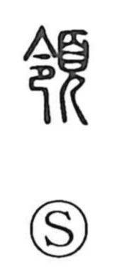

領

Uncategorized
Kun: eri | On: ryo
collar ・ neck ・ domain ・ territory ・ jurisdiction ・ to govern
Explanation
Shirakawa interprets 領 as a phono‑semantic compound: the head radical 頁 provides the idea of the head/neck, while 令 supplies the sound. Early lexica explain it as the nape or back of the neck, a sense vividly echoed in a verse of the Book of Odes that praises a woman’s graceful neck. From this literal “neck” meaning—paired with the “waist” 腰 as vital bodily points—arises the notion of the essentials or the gist, as in the word 要領. By extension the character came to mean leading or managing people and, consequently, the realm under one’s control, hence senses such as jurisdiction and territory; in concrete usage it also denotes the collar at the neck.